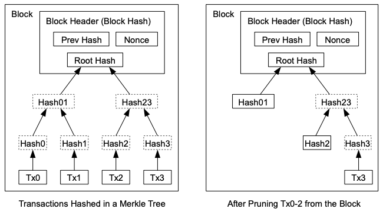

New transaction broadcasts do not necessarily need to reach all
nodes. As long as they reach many nodes, they will get into a
block before long. Block broadcasts are also tolerant of dropped
messages. If a node does not receive a block, it will request it
when it receives the next block and realizes it missed one.
6. Incentive
By convention, the first transaction in a block is a special
transaction that starts a new coin owned by the creator of the
block. This adds an incentive for nodes to support the network,
and provides a way to initially distribute coins into circulation,
since there is no central authority to issue them. The steady
addition of a constant of amount of new coins is analogous to gold
miners expending resources to add gold to circulation. In our
case, it is CPU time and electricity that is expended.
The incentive can also be funded with transaction fees. If the
output value of a transaction is less than its input value, the
difference is a transaction fee that is added to the incentive
value of the block containing the transaction. Once a
predetermined number of coins have entered circulation, the
incentive can transition entirely to transaction fees and be
completely inflation free.
The incentive may help encourage nodes to stay honest. If a greedy
attacker is able to assemble more CPU power than all the honest
nodes, he would have to choose between using it to defraud people
by stealing back his payments, or using it to generate new coins.
He ought to find it more profitable to play by the rules, such
rules that favour him with more new coins than everyone else
combined, than to undermine the system and the validity of his own
wealth.
7. Reclaiming Disk Space
Once the latest transaction in a coin is buried under enough
blocks, the spent transactions before it can be discarded to save
disk space. To facilitate this without breaking the block's hash,
transactions are hashed in a Merkle Tree [7][2][5], with only the
root included in the block's hash. Old blocks can then be
compacted by stubbing off branches of the tree. The interior
hashes do not need to be stored.

A block header with no transactions would be about 80 bytes. If we
suppose blocks are generated every 10 minutes, 80 bytes * 6 * 24 *
365 = 4.2MB per year. With computer systems typically selling with
2GB of RAM as of 2008, and Moore's Law predicting current growth
of 1.2GB per year, storage should not be a problem even if the
block headers must be kept in memory